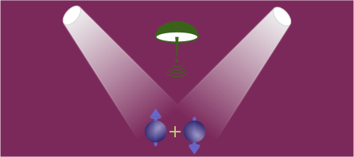

Hi, my name is
Sanchar Sharma
Introduction
I am a theoretical physicist, currently holding a junior group leader position in Madrid with a funding from the "la Caixa" foundation.
My research focuses on the quantum dynamics of ferromagnets, with the long-term goal of harnessing their potential for quantum applications, such as interconnects, transduction, and logic operations. Under typical conditions, the collective excitations in ferromagnets can be described by magnons, which are quasiparticles representing either propagating or standing waves of spin excitations. I theoretically study the quantum properties of magnons and their interactions with other quantum systems, including microwaves and optical fields. A key aspect of my work is exploring how magnons can act as carriers of quantum information, offering new pathways for quantum communication, particularly in systems where devices are in close proximity. This involves both fundamental research on microscopic theories to describe magnon behavior and designing protocols for their quantum manipulation.
We are organizing a workshop on Quantum Magnonics, and the applications to attend are open. Find more details here.
Contact Me
Background
"la Caixa" Junior Group Leader
IFIMAC - Condensed Matter Physics Center, Universidad Autónoma de Madrid (UAM)
Madrid, Spain
Sep 2025 onwards
Postdoctoral Researcher
Laboratoire de Physique de l'Ecole Normale Supérieure (LPENS)
Paris, France
Apr 2024 -- Aug 2025
Postdoctoral Researcher
Rheinisch-Westfälische Technische Hochschule (RWTH)
Aachen, Germany
Jan 2023 -- Mar 2024
Postdoctoral Researcher
Max Planck Institute for the Science of Light (MPL)
Erlangen, Germany
Nov 2019 -- Dec 2022
Doctoral candidate
Delft University of Technology (TU Delft)
Delft, Netherlands
Aug 2015 -- Aug 2019
Bachelors + Masters
Indian Institute of Technology Bombay (IIT-B)
Mumbai, India
Aug 2010 -- Jun 2015
Research
Quantum sensing and manipulation of magnons
Can magnets be useful for quantum applications? While magnetism has long been investigated for classical applications such as low-power logic devices, long-range transport, magnetic field sensing, and more, its potential for quantum applications garnered attention only recently. My goal with these theoretical developments is to propose feasible experiments that can advance demonstrations of genuine non-classical effects in magnets.
- Optical Signatures of Quantum Skyrmions
Sanchar Sharma, Christina Psaroudaki, Phys. Rev. Lett. (2026) - Magnon-mediated quantum gates for superconducting qubits
M Dols, Sanchar Sharma, L Bechara, YM Blanter, M Kounalakis, S Viola Kusminskiy, Phys. Rev. B (2024) - Quantum tomography of magnons using Brillouin light scattering
Sanchar Sharma, S Viola Kusminskiy, VASV Bittencourt, Phys. Rev. B (2024) - Protocol for generating an arbitrary quantum state of the magnetization in cavity magnonics
Sanchar Sharma, VASV Bittencourt, S Viola Kusminskiy, Journal of Physics: Materials (2022) - Spin cat states in ferromagnetic insulators
Sanchar Sharma, VASV Bittencourt, AD Karenowska, S Viola Kusminskiy, Phys Rev B: Letters (2021)
When magnon met photon
Microwave to optical transduction is one of the most sought after application in quantum communication. Magnets are promising intermediaries for such a transduction because they couple very strongly with the microwaves, although achieving a comparable coupling with optics remains a challenge. My work involves studying and enhancing this optomagnonic coupling, particularly with the use of cavities.
- Optical Signatures of Quantum Skyrmions
Sanchar Sharma, Christina Psaroudaki, Phys. Rev. Lett. (2026) - Cavity-Enhanced Optical Manipulation of Antiferromagnetic Magnon-Pairs
TS Parvini, ALE Römling, Sanchar Sharma, S Viola Kusminskiy, Phys. Rev. B (2025) - Design of an optomagnonic crystal: Towards optimal magnon-photon mode matching at the microscale
J Graf, Sanchar Sharma, H Hübl, S Viola Kusminskiy, Phys. Rev. Res. (2021) - Coherent pumping of high-momentum magnons by light
F Šimić, Sanchar Sharma, YM Blanter, GEW Bauer, Phys. Rev. B (2020) - Optimal mode matching in cavity optomagnonics
Sanchar Sharma, BZ Rameshti, YM Blanter, GEW Bauer, Phys. Rev. B (2020) - Optical cooling of magnons
Sanchar Sharma, YM Blanter, GEW Bauer, Phys. Rev. Letters (2018) - Selection rules for cavity-enhanced Brillouin light scattering from magnetostatic modes
JA Haigh, NJ Lambert, Sanchar Sharma, YM Blanter, GEW Bauer, AJ Ramsay, Phys. Rev. B (2018) - Light scattering by magnons in whispering gallery mode cavities
Sanchar Sharma, YM Blanter, GEW Bauer, Phys. Rev. B (2017)
Explanations
Here are explanations of some of my research, which should be readable at an undergraduate level. Click to expand any topic or paper.
The first step in measuring any system, whether it's magnetic or not, is to connect it to something we already know how to measure. For magnets, I turned to optical photons. Why? Because we already have incredibly advanced tools to measure photons with quantum precision. Then, the idea is simple: if we can transfer information from magnons to photons, and then measure those photons, we can fully characterize the quantum state of the magnons. The process of fully characterizing a quantum state is called quantum tomography.
So, can we transfer information from magnons to photons? That's where this process called Brillouin light scattering comes in. When a photon strikes a magnet, it can either absorb a magnon and gain energy or create a magnon and lose energy. Either way, the photon's frequency changes as it scatters, although not every photon will scatter. What's useful for us is that the number of scattered photons depends strongly on the phase of the photons (remember that photons are waves, just like everything else in this universe) and the quantum state of the magnons. By varying the phase of the photons and monitoring how many of them scatter, we can gather a lot of information about the magnons' quantum state.
The actual task in this project was two-fold. First, to derive the precise relationship between the number of scattered photons, their phase, and the quantum state of the magnons. Secondly, to develop an algorithm to process this relationship to reconstruct the quantum state of the magnons that best matches the observed optical data.
In this work, I developed an algorithm that provides a set of operations needed to generate any arbitrary quantum state of magnons. Let's see what the algorithm spits out for an example. Suppose you want to use magnons to sense extremely tiny magnetic fields. To do this, it turns out that they should be prepared in a strange quantum state: a superposition of having no magnons and having six magnons at the same time (let's call this state 0+6). Simply injecting magnons into the system will get you to six magnons, but how do you create that superposition?
The algorithm offers a neat solution. First, you inject magnons one by one until you have three magnons in the system. Then, you couple these magnons to another system that can exchange information with them. If you tune this coupling just right, there's a 50-50 chance the system will either create a magnon or absorb one. This leaves you with a superposition of 2+4 magnons. Repeat this process two more times, and you end up with the 0+6 state you wanted.
Our theoretical research proposes a new experimental approach: shine a laser onto a skyrmion and analyze the light that scatters off it. It turns out that if the skyrmion behaves classically, the spectrum, i.e., the number of photons across different energies, will be symmetric around the input laser. But if the skyrmion exhibits quantum behavior, distinctive asymmetries will appear in this spectrum. These asymmetries can be controlled by adjusting the laser's power, making them easier to detect and measure.
This work provides a concrete, achievable test for the quantum nature of skyrmions. By offering a clear experimental signature that distinguishes quantum from classical skyrmions, this research paves the way for confirming whether these magnetic structures truly operate in the quantum realm, advancing this new platform for implementing qubits.
Proposals
For researchers who are applying to funding proposals, I have uploaded my submissions and the review comments on my GitHub account as examples.
My proposal to Marie-Curie Postdoctoral Fellowship submitted in 2023 can be found here.
My proposal to "la Caixa" Junior Leader fellowship submitted in 2024 can be found here.
Vacancies
Unfortunately, I don't have any vacancies right now, but I am open to joint proposals for funding. Some of the options are: Marie-Curie Postdoctoral Fellowships from the European Commission; INPhINIT from the "la Caixa" foundation; a mobility grant for PhDs in Iran and sub-Saharan Africa; Juan de la Cierva fellowships from the Spanish Government.